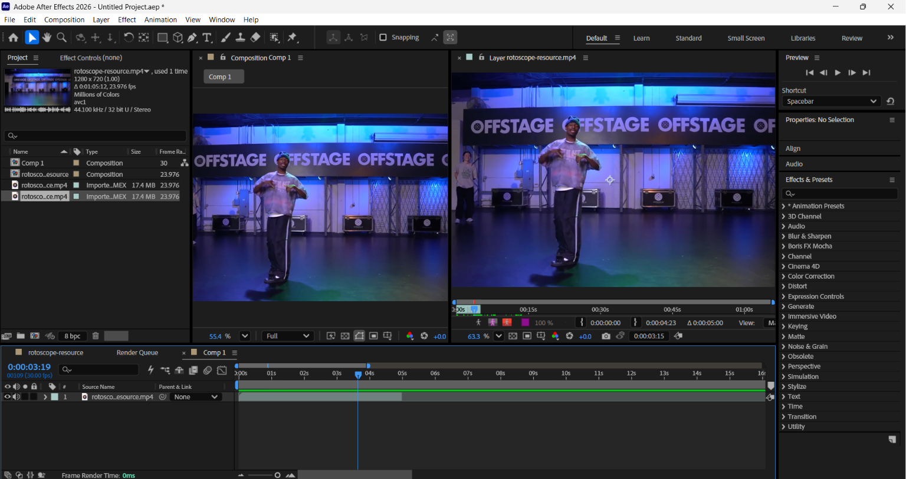
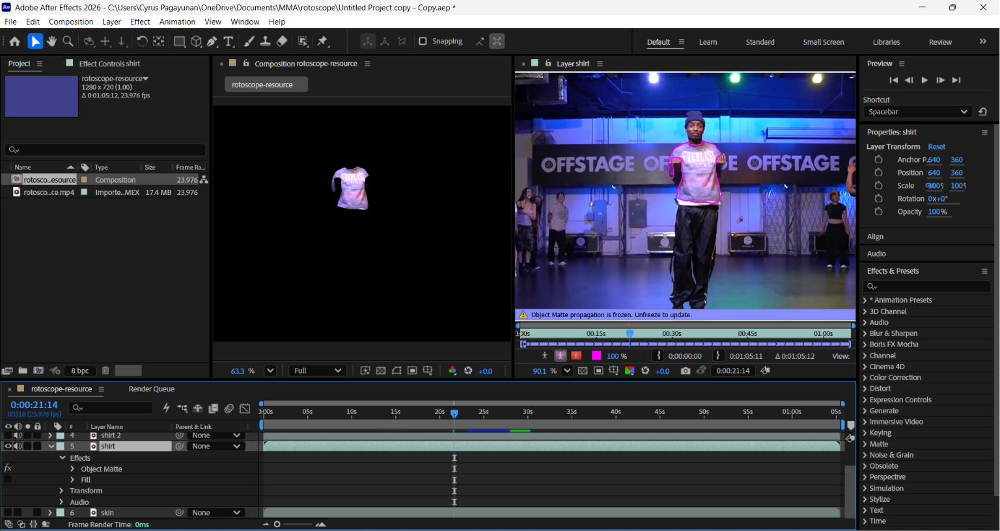
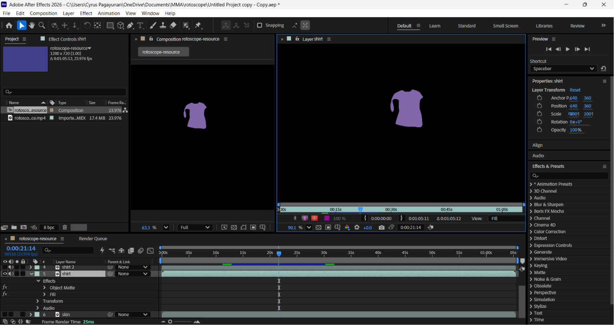
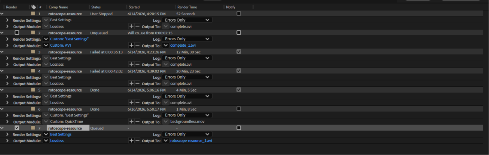
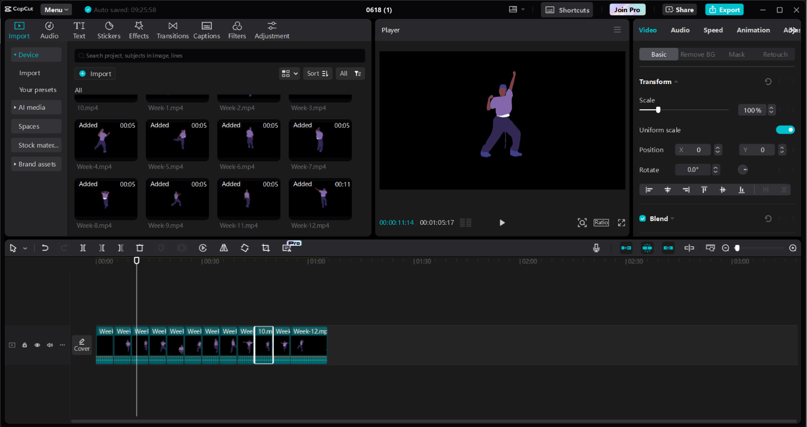
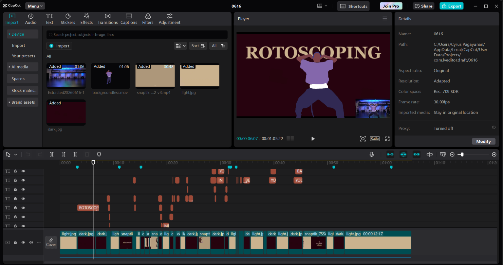

Step-by-Step Tutorial
Select Source Video
Select the video you want to animate. For the best results, make sure it is high-quality, the subject clearly stands out from the background, and there is some fun movement.
Break Down the Video
Use CapCut to break your video down into 5-second parts so it is easier to work with.

Put the videos into new Compositions
In After Effects, take each 5-second piece of your video and place it into its own brand-new composition.

Trace Each Layer
Use the Roto Brush Tool to trace the shirt, pants, body, hair, and shoes, putting each on its own layer. Freeze each layer so you can work on them individually.

Fill the Layers with Colors
Fill each of your separated layers (like the shirt, pants, and hair) with a single, solid color. This gets them ready to be styled.

Render All Compositions
Now it is time to save your work. Add each 5-second piece to the Render Queue and export them, making sure to keep your export settings exactly the same across the board

Compile All 5-Second Clips
Bring all your finished clips back into CapCut and put them in order.

Edit Lyrics & Background
Use CapCut to add your lyrics and match them to the music. Change the background colors to make your final video look great.
